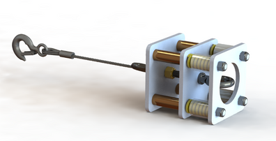

PROJECT 05 / Mid-West Forge
From a repeated failure to custom hardware
Developed a custom damping arrangement for a dust-collector hopper winch experiencing wire-rope failures.
Designed and fabricated
What needed to change.
The hopper winch arrangement needed to address recurring wire-rope snapping and improve the way the mechanism operated.
My part in the work.
Investigated the problem, performed calculations, and designed a custom damping system. The portfolio documents both the CAD design and fabricated hardware.


How I approached it.
- Investigated the recurring failure and developed a mechanical solution.
- Performed design calculations and created the custom damping assembly in CAD.
- Carried the concept through to fabricated hardware.
What the work delivered.
Designed and fabricated a custom damping assembly for the hopper winch.
The design process connects failure diagnosis, calculations, detailed geometry, and physical fabrication.